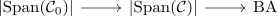
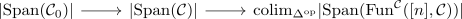

cofinality theorem of connective k-theory
Proposition
Let $\mathcal{C}_0 \rightarrow \mathcal{C}$ be a dense stable subcategory. Then the K group functor induces
- an isomorphism on positive
- injection
Proof
It suffices to show that there exists a fiber sequence

with $A \in \mathrm{Ab}$.
For that we argued that

in general
Here some adaption of cisinskis statement / argument puts
\begin{align*}
\vert Q_k(\mathcal{C}) \langle Q_k(\mathcal{C}_0) \rangle = K_0(Q_k(\mathcal{C}))/K_0(Q_k(\mathcal{C}_0)) \eqqcolon A_k
\end{align*}
where the right side is considerd as discrete category with
Hence
\begin{align*}
\mathrm{colim}_{\Delta^{\mathrm{op}}} A_k \simeq \vert \mathrm{Bar}(A) \vert \simeq \mathrm{BA}
\end{align*}